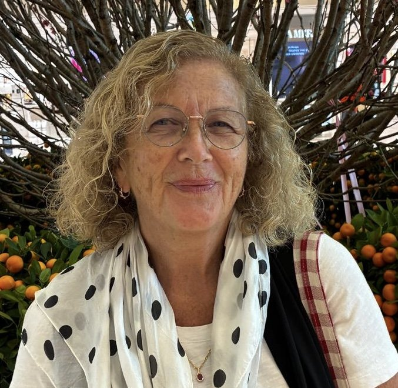

About the Storyteller

I never set out to write a book. I simply wanted my children and grandchildren to know something of the people who came before them.
I grew up with the stories of our family and I knew and loved the old tenement flat in Armour Street, Kilmarnock. As the years passed and the people who remembered those days were no longer here to tell their stories, I began to realise how easily they could be lost.
So I started looking. One photograph led to a document, one name to another, and before long I was following my ancestors across oceans, through two world wars and back through generations of Scottish family life.
Some discoveries answered questions I had carried for years. Others raised new ones. And somewhere along the way, I found myself writing their stories.
Hameward Bend grew from that journey. It is my first book, and although it began as something for my family, I hope that others might find within its pages something of their own families, their own memories and the places they once called home.